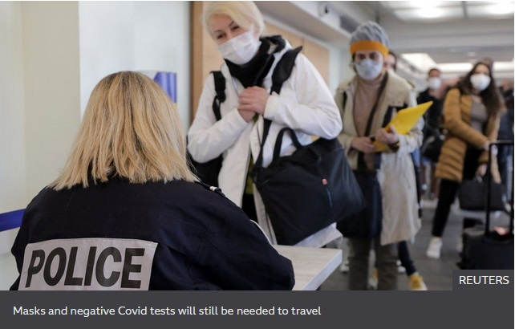

Covid-19 pandemic: France eases travel for UK and six other countries

France is to ease restrictions on travel to and from seven countries outside the EU, including the UK.
The foreign ministry said a "compelling reason" was no longer needed for travel to Australia, Israel, Japan, Singapore, South Korea, New Zealand and Britain.
All non-essential travel was banned by the French government on 31 January as it tried to curb the spread of Covid-19 variants, including the UK variant.
Safety measures remain in place for travellers.
All passengers arriving in France will still need to provide a negative Covid-19 test result issued less than 72 hours before they travel, the ministry said.
French Tourism Minister Jean-Baptiste Lemoyne said the decision to ease restrictions was taken because of the improving health situation in the seven countries.
He said that Britain would be included "because the UK variant now also circulates widely in France".